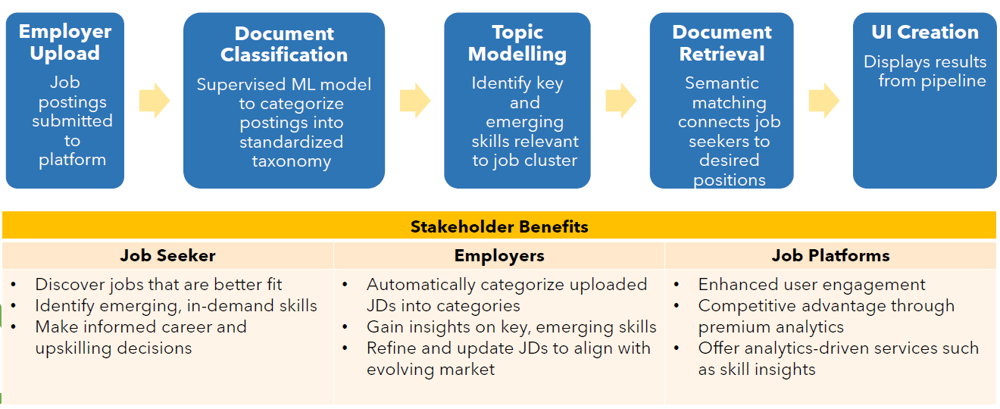
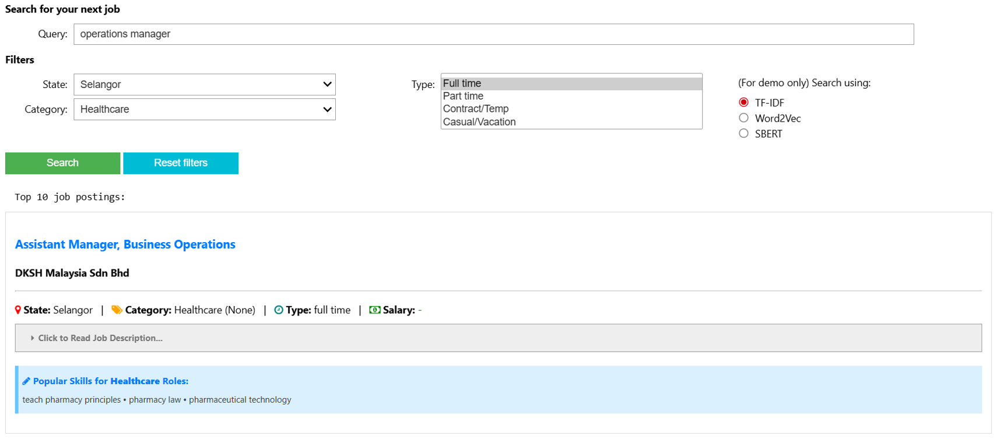

Job Recommendation System in Job Street
Role: Team member
Year: Nov 2025
Topics: Information Retrieval, Natural Language Processing, Recommendation, Search Ranking & Relevance
Source: Github repository
About the Project
This is a group project for ISSS609 Text Analytics course.
The objective of the project is to leverage text analytics techniques to recommend relevant job postings to job seekers and provide insights on in-demand skills for major job categories. This recommendation pipeline consists of 3 major modules:
- Document Classification: Supervised ML model to automatically categorize postings into standardized taxonomy (i.e. major job categories)
- Topic Modelling: Identify key and emerging skills relevant to each job cluster
- Document Retrieval: Semantic matching to connect job seekers to desired positions

My Role
- Worked on the Document Retrieval module with another classmate
- Generated word embeddings using TF-IDF and Word2Vec for experimentation on performance
- Designed and built text preprocessing, retrieval and ranking pipeline
- Built hard and soft filters
Final Product
- Front End interactive user interface where user can type in query
- Filter results by categorical filters, or company name (if mentioned in query)
- Display in-demand skills related to the industry of the job posting result
- Built using ipywidgets
